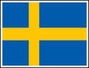

| Show 14 November 2012 |
Experience the Eurovision Song Contest with Radio International and Partners.
Please note that many interviews we air are also available as video interview which can be viewed on our Radio International YouTube Channel. Just take a look and enjoy also see the artists talk to us.
OGAE UK's Eurobash 2012 - A Look Back at an Amazing Event - click to get all the story and more.
 Interview with Bobbysocks (Norway 1985): The Toma Fund of Newcastle in the
United Kingdom organised an amazing event on Wednesday, 11 April 2012 in
the Sage, Gateshead with the involvement of many Eurovision Winners and
performers such as Linda Martin, Johnny Logan, Bobbysocks, Anne-Marie David, Scott Fitzgerald, Scooch, Josh Dubovi, Nicki French, Black Lace
and others. The event was called "Eurovision Reunited". The aim of the event was to raise money in aid of the the
Toma Fund and children suffering from cancer. Details about the Toma
Fund can be found here
and who wishes to donate money for this good cause please see the
website how to donate. Radio International was on location as the only
Eurovision media having the great pleasure to interview the artists amongst which the Bobbysocks who won the Eurovision Song Contest in 1985 for Norway with the song "La det swinge - Let it swing".
Bobbysocks are Hanne Krogh (Norway) and Elisabeth Andreassen
(Sweden). Complete details of the charming ladies who represented also
their countries as soloists can be found here.
Chris and JP interviewed the Bobbysocks backstage in the Sage in
Gateshead which you can hear on this week's edition of Radio
International - Enjoy!. To watch the video clip of the interview click here. JP's Photo Album of the event is available here. Interview with Bobbysocks (Norway 1985): The Toma Fund of Newcastle in the
United Kingdom organised an amazing event on Wednesday, 11 April 2012 in
the Sage, Gateshead with the involvement of many Eurovision Winners and
performers such as Linda Martin, Johnny Logan, Bobbysocks, Anne-Marie David, Scott Fitzgerald, Scooch, Josh Dubovi, Nicki French, Black Lace
and others. The event was called "Eurovision Reunited". The aim of the event was to raise money in aid of the the
Toma Fund and children suffering from cancer. Details about the Toma
Fund can be found here
and who wishes to donate money for this good cause please see the
website how to donate. Radio International was on location as the only
Eurovision media having the great pleasure to interview the artists amongst which the Bobbysocks who won the Eurovision Song Contest in 1985 for Norway with the song "La det swinge - Let it swing".
Bobbysocks are Hanne Krogh (Norway) and Elisabeth Andreassen
(Sweden). Complete details of the charming ladies who represented also
their countries as soloists can be found here.
Chris and JP interviewed the Bobbysocks backstage in the Sage in
Gateshead which you can hear on this week's edition of Radio
International - Enjoy!. To watch the video clip of the interview click here. JP's Photo Album of the event is available here.
 Interview with Esther Hart (Netherlands 2003) and Joan Franka (Netherlands 2012). OGAE
Sweden organised their annual Fanclub Convention on 13 October 2012 in
the municipalty of Eskilstuna near Stockholm in Sweden. National and
International artists were invited to this event such as Joan Franka
(Netherlands 2012), Glen Vella (Malta 2011), SINPLUS (Switzerland 2012),
Esther Hart (Netherlands 2012), SINPLUS (Switzerland 2012), Birgitta
Haukdahl (Iceland 2003) and
the Mother of the Eurovision Song Contest - the very first Winner Lys
Assus who back in 1956 won the Eurovision Song Contest with the song "Refrain". The Team of Radio International was in
Eskilstuna, Sweden and conducted interviews with the invited Eurovision
artists including with the two Dutch participants at the Eurovision Song Contest. Esther Hart represented the Netherlands at the Eurovision Song Contest 2003 with the song "One more night" reaching Number 13 in Riga. And Joan Franka respresented the Netherlands in 2012 with the song "You and me"
in Indian outfit. Unfortunately, although a fan favourite - failed to
qualify for the Grand Final in Baku. Radio International also met the
singer at the Eurovision Live Concert organised by OGAE Portugal in
September. You will get both interviews in the show this week talking
about their careers after Eurovision and future plans. To see the photos of the OGAE Sweden event including the reception in the Town Hall of Eskilstuna - click here. And to watch the interviews click here for Joan Franka and here for Joan and Esther together. Interview with Esther Hart (Netherlands 2003) and Joan Franka (Netherlands 2012). OGAE
Sweden organised their annual Fanclub Convention on 13 October 2012 in
the municipalty of Eskilstuna near Stockholm in Sweden. National and
International artists were invited to this event such as Joan Franka
(Netherlands 2012), Glen Vella (Malta 2011), SINPLUS (Switzerland 2012),
Esther Hart (Netherlands 2012), SINPLUS (Switzerland 2012), Birgitta
Haukdahl (Iceland 2003) and
the Mother of the Eurovision Song Contest - the very first Winner Lys
Assus who back in 1956 won the Eurovision Song Contest with the song "Refrain". The Team of Radio International was in
Eskilstuna, Sweden and conducted interviews with the invited Eurovision
artists including with the two Dutch participants at the Eurovision Song Contest. Esther Hart represented the Netherlands at the Eurovision Song Contest 2003 with the song "One more night" reaching Number 13 in Riga. And Joan Franka respresented the Netherlands in 2012 with the song "You and me"
in Indian outfit. Unfortunately, although a fan favourite - failed to
qualify for the Grand Final in Baku. Radio International also met the
singer at the Eurovision Live Concert organised by OGAE Portugal in
September. You will get both interviews in the show this week talking
about their careers after Eurovision and future plans. To see the photos of the OGAE Sweden event including the reception in the Town Hall of Eskilstuna - click here. And to watch the interviews click here for Joan Franka and here for Joan and Esther together.
 Junior Eurovision Song Contest 2012: The 2012 edition
of the Junior Eurovision Song Contest will be staged from the Heineken
Music Hall in Amsterdam on Saturday, 01 December 2012 wth the
participation of young artists from twelve countries: Albania, Armenia, Azerbaijan, Belarus, Belgium, Georgia, Israel, Moldova, Netherlands, Russia, Sweden and Ukraine competing
for the trophy of the event. The show starts at 2015 hours CET and will
be televised by the participating countries as well as on the event's
website Junior Eurovision Song Contest 2012.
Here you will also find all detailed information about the young
artists. Members of the Team of Radio International will be present at
the event and conduct interviews with the young artists which you can
hear during the shows around the 01 December 2012. To get us into the
mood for the Junior Eurovision Song Contest 2012 Radio International
welcomes JESC music requests from the listeners and viewers. Junior Eurovision Song Contest 2012: The 2012 edition
of the Junior Eurovision Song Contest will be staged from the Heineken
Music Hall in Amsterdam on Saturday, 01 December 2012 wth the
participation of young artists from twelve countries: Albania, Armenia, Azerbaijan, Belarus, Belgium, Georgia, Israel, Moldova, Netherlands, Russia, Sweden and Ukraine competing
for the trophy of the event. The show starts at 2015 hours CET and will
be televised by the participating countries as well as on the event's
website Junior Eurovision Song Contest 2012.
Here you will also find all detailed information about the young
artists. Members of the Team of Radio International will be present at
the event and conduct interviews with the young artists which you can
hear during the shows around the 01 December 2012. To get us into the
mood for the Junior Eurovision Song Contest 2012 Radio International
welcomes JESC music requests from the listeners and viewers.
Eurovision Song Contest Spotlight - Sweden at the Eurovision Song Contest: The current series continuous where Radio International
correspondants take a look at the entries of Sweden to the Eurovision
Song Contest. Sweden won the Eurovision Song Contest five times kicking
off with ABBA's "Waterloo" in 1974, followed by the Herreys ten years on in 1984 with "Diggi-Loo Diggi-Ley". Then with Carola in 1991 when she won with "Captured by a love storm".
Swedish success continued in 1999 when Charlotte Nilssson took the
honours with "Take me to your heaven" and in 2012 Loreen took the trophy
in Baku for the Winning Song "Euphoria". But what about the
other great Swedish entries that did not win. It is time to check them
out on Radio International over the next few weeks. This week Alasdair Rendall will be joining the team in the studio to take a
look at the early days of Swedish entries which will be 1989 till 1992.
 Euro Friends Song Contest 2012 - The Quarter Final 4 Qualifiers with Andy Simon: Andy is back next week with the Euro Friends Song Contest in search for
the ultimate
Eurovision song
as voted for by the many fans around the world. Andy will reveal the qualifiers of the Fourth Quarter Final of the Euro Friends Song Contest 2012 which go through to the Semi Finals. The
website of
the Euro Friends Song Contest you will find here
where you can easily vote for your favourite Eurovision songs you wish
to see in the next stage of the contest and also see The Euro-Friends TV
Show as hosted by Andy Simon.
You can also join the Facebook Group here. Euro Friends Song Contest 2012 - The Quarter Final 4 Qualifiers with Andy Simon: Andy is back next week with the Euro Friends Song Contest in search for
the ultimate
Eurovision song
as voted for by the many fans around the world. Andy will reveal the qualifiers of the Fourth Quarter Final of the Euro Friends Song Contest 2012 which go through to the Semi Finals. The
website of
the Euro Friends Song Contest you will find here
where you can easily vote for your favourite Eurovision songs you wish
to see in the next stage of the contest and also see The Euro-Friends TV
Show as hosted by Andy Simon.
You can also join the Facebook Group here.
 Eurovision Song Contest News: Luke
Fisher
joins the team in the studio every week to bring you the news
and the latest developments connected to the Eurovision Song Contest.
Whether it is music releases of Eurovision performers, special
concerts, gossip, etc Luke will have it all for us during the weekly
edition of Radio International. He also takes a look at some statistics
such as viewing figures in the various countries and more. Eurovision Song Contest News: Luke
Fisher
joins the team in the studio every week to bring you the news
and the latest developments connected to the Eurovision Song Contest.
Whether it is music releases of Eurovision performers, special
concerts, gossip, etc Luke will have it all for us during the weekly
edition of Radio International. He also takes a look at some statistics
such as viewing figures in the various countries and more.
In addition, Eurovision News is available on www.eurovision.tv, escxtra.com, esctoday.com and escflashmalta.com.
Eurovision Song Contest Calendar of Events: Check out a detailed listing of all events scheduled around Europe. If you hear of something we have not listed please drop us a line by clicking here and
let us know. After Eurovision is before Eurovision and to bridge the
Eurovision Gap many Eurovision Clubs will be holding their annual
convention.
Upcoming Events:
 Eurovision Quiz: Scratch your heads and bite your
nails at our weekly Eurovision Song Contest Quiz. Good luck and win a
copy of a past Eurovision Song Contest Final on DVD. All you have to do
is to identify the five clips with Artist, Song, Country and Year. Send
your answers via the website's CONTACTs form. As long as stock last you can also select something out of
the Eurovision 2010 Goodies Bag. Good Luck! Congratulations go to Rafael Vivas from Venezuela for winning this week's Clip Quiz. Eurovision Quiz: Scratch your heads and bite your
nails at our weekly Eurovision Song Contest Quiz. Good luck and win a
copy of a past Eurovision Song Contest Final on DVD. All you have to do
is to identify the five clips with Artist, Song, Country and Year. Send
your answers via the website's CONTACTs form. As long as stock last you can also select something out of
the Eurovision 2010 Goodies Bag. Good Luck! Congratulations go to Rafael Vivas from Venezuela for winning this week's Clip Quiz.
Eurovision Music requests as well as other music requests are most welcome and can be done via our website's CONTACT US page. Let us know what you want to hear and where you are from. Due
to the large number of requests we received and cannot accommodate this
week these requests will be added to the play list for the future
shows.
|
|||||
 Radio International TV Channel with Chat Room: Radio International launched its own
Radio International TV Channel with Chat Room: Radio International launched its own  Eurovision News Website: escXtra.com: Luke Fisher is the Editor - in - Chief of the newly created Eurovision News website called escXtra.com. Check our more and EXTRA news on the Eurovision Song Contest by visiting the website
Eurovision News Website: escXtra.com: Luke Fisher is the Editor - in - Chief of the newly created Eurovision News website called escXtra.com. Check our more and EXTRA news on the Eurovision Song Contest by visiting the website | < Prev | Next > |
|---|